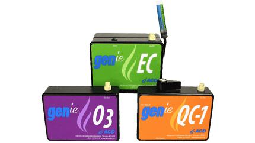
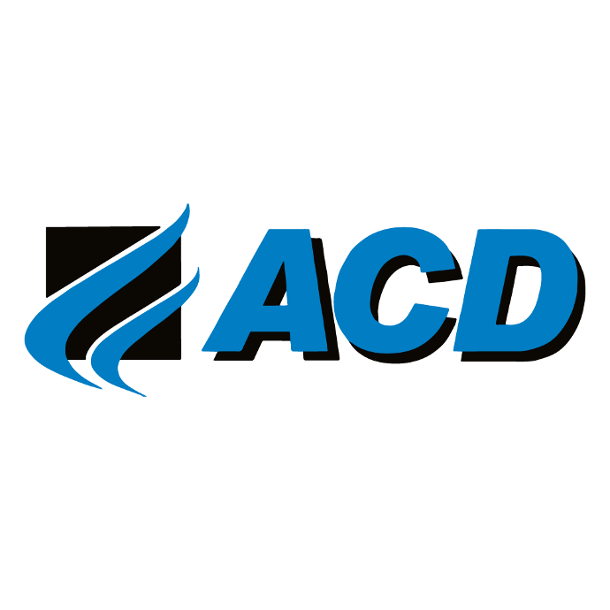
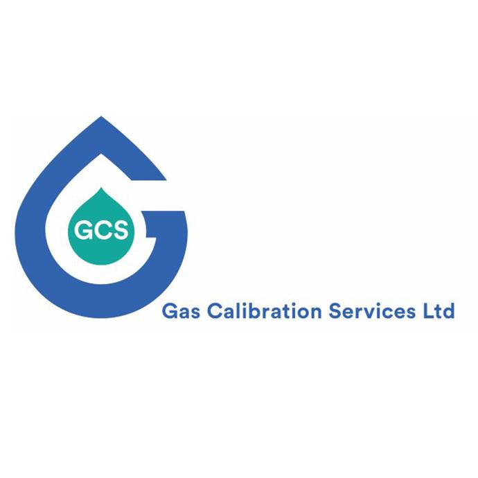

Generatory gazów kalibracyjnych
Przenośne, na żądanie rozwiązania do kalibracji gazów.
Poproś o wycenęTradycyjnie gaz kalibracyjny był dostarczany w cylindrach, co wiązało się z istotnymi ograniczeniami. Te cylindry są głównie wypełnione czystym, suchym powietrzem, co czyni je bardzo niewydajnymi. Na przykład w cylindrze 10 PPM, 99,999% zawartości to powietrze. Jednak generatory gazów kalibracyjnych oferują bardziej korzystną alternatywę. Poprzez wykorzystanie otaczającego powietrza w punkcie kalibracji i jego mieszanie z pożądanym gazem, te generatory zapewniają znaczne korzyści.
Generatory gazów kalibracyjnych wytwarzają gaz na żądanie, eliminując potrzebę przechowywania i oferując kilka zalet w porównaniu z starszymi metodami. Gaz jest wytwarzany tylko wtedy, gdy jest to wymagane, i nigdy nie jest sprężany, co zapewnia bezpieczeństwo podczas transportu powietrznego i utrzymanie jakości w czasie. Wielu klientów polega na tym samym źródle kalibracji przez długie okresy, sięgające od 5 do 15 lat, bez jakiegokolwiek pogorszenia jakości kalibracji.
Zdolność do generowania gazu na żądanie pozwala na wykorzystanie pojedynczego źródła kalibracji do produkcji zmiennych stężeń, w przeciwieństwie do cylindrów oferujących stałe stężenia. Większość generatorów może dostarczać stężenia w zakresie od 0,25 do 125 części na milion, z możliwością regulacji przepływu.

Nasi partnerzy w zakresie generatorów gazów kalibracyjnych

Advanced Calibration Designs
Advanced Calibration Designs (ACD) została założona w 1988 roku z misją opracowania i produkcji najbardziej niezawodnych, dokładnych, niezawodnych i przystępnych cenowo standardów kalibracji gazów na świecie.
Dowiedz się więcej
Gas Calibration Services Ltd
Gazcal firmy Gas Calibration Services Ltd oferuje prostą i wygodną metodę na żądanie generowania chloru w niskich stężeniach PPM. Ta kosztowa i przenośna metoda zapewnia dostępność w razie potrzeby, eliminując złożoności związane z tradycyjnymi metodami przechowywania.
Dowiedz się więcej